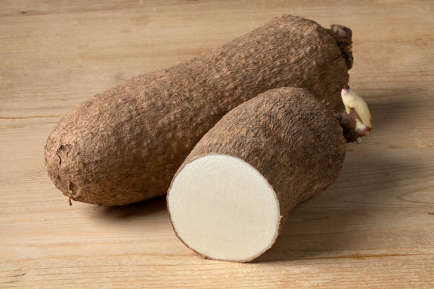
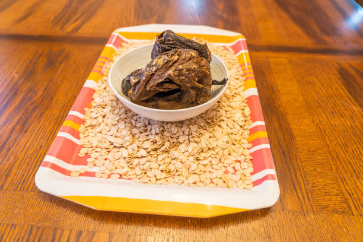

Recipe Information
Preparation time : 30 minutes
Cooking time : 1 hour
Servings : 5-7
Difficulty : Intermediate
Ingredients
- 2 cups of ground melon
- 1 cup of palm oil
- 1/2 cup of crayfish
- Locust beans
- Pepper mix (tomatoes, pepper and red bell pepper)
- 2 Onions
- 1 tuber of yam
- Ponmo
- Assorted meat or fish
- Assorted vegetables(Ugwu, scent leaf and bitter leaf)
- Seasoning and salt
Instructions
- Prepare your egusi paste by adding enough water for the right consistency with some chopped onions.
- Heat the palm oil on medium heat and add your finely chopped onions, grinded crayfish and locust beans. Saute until the onions becomes translucent.
- Add your egusi paste as small balls in the heated palm oil and allow it to simmer for 5 minutes.
- Add your already blended pepper mix and stir.
- Add enough seasonong and salt to taste.
- Add Ponmo and stock fish if available and allow to cook for 20-30 minutes.
- Finally, add the assorted vegetables and allow it to cook on low heat for 3minutes.
- To make the pounded yam, peel off the yam and cut into medium sized slices.
- Wash the yam thoroughly to remove any dirt. Then, place in a large pot filled with water and boil until they are soft and tender
- Once the yam is cooked, transfer a portion of the slices into a mortar, pounding vigorously till it becomes smooth. Pack inside a well covered bowl
- Repeat in batches for the remaining slices. Once done, put all the portions in the mortar depending on its capacity. Add hot water and pound vigorously till soft, stretchy and of smooth and uniform texture
- Pack in portions and serve the pounded yam hot alongside the delicious egusi soup.
Tips
- Ensure the consistency of the egusi paste is not too thick or watery.
- When frying the egusi, allow the egusi balls to solidify or lump up together.
- If meat stock is available, it will better improve the taste of the soup.


You can check for more details here